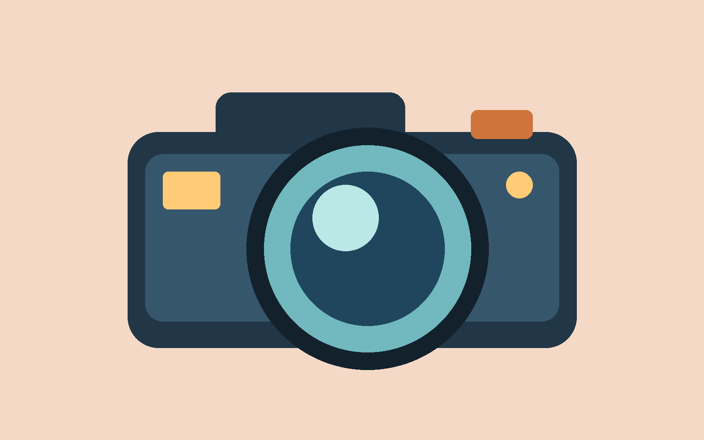

Before you start
Use this guide with your assessment booklet. Step numbers match its tasks. Save after each step and work at your own pace.
These steps use Photoshop on Windows desktop. On a Mac, use Command in place of Ctrl for the shortcuts shown. Your teacher will check any menu differences. The diagrams explain ideas; they are not screenshots of Photoshop.
Your resource pack


Your own working folder
In your college OneDrive, make an Imaging Software folder. Inside it make:
- originals — unchanged images
- working — your PSD and prepared images
- exports — print and web copies
- evidence — booklet and screenshots
Keep the downloaded resource folders together. If a GitHub page shows code, download the pack and open the HTML guide in your browser. No Git or code editor is needed.
Show your work clearly
For a screenshot, show the useful part of Photoshop, press Windows + Shift + S, select the area and paste into the matching booklet box. Make layer names and settings readable. Two snippets are fine.
Keep the editable PSD: a flat picture cannot show that your text, layers and masks still work. Your teacher may ask for a short demonstration.
0Try, save and reopen
Why this helps
Layers let you move and change one part without moving everything.
- Open Photoshop. Choose File → Open and open practice-background.png from the pack’s assets folder.
- Choose File → Place Embedded. Select practice-camera.png. Drag a corner to resize it; keep the width/height proportions linked in the options bar. Press Enter to confirm.
- Open Window → Layers. Double-click each layer name and use clear names such as Background and Camera. The placed image is a Smart Object: it keeps its original image data for later transformations.
- Select the Camera layer. Choose the Move tool (V) and drag the camera. Try Edit → Undo, then move it again.
- Choose File → Save As, then save on your computer if asked. Choose Photoshop (.PSD), keep layers and save as Firstname-Surname-Practice.psd in working. Accept the compatibility option if shown.
- Close the document. Open your working folder and reopen the PSD.

Try it
Hide the Camera layer using its eye icon, then show it. Swap the layer order. What changes?
Check before moving on
Can you find the saved file and both layers? Show your teacher before starting the poster.
Stuck? Try this
If the picture is in a different document tab, return to the background tab and use Place Embedded. If it will not move, select its layer and confirm any active transform with Enter.
1Plan your message
Why this helps
A poster has only a few seconds to get its message across.
- Open the starter brief. Your draft audience is someone aged 16+ thinking about Kickstart. The poster will have a noticeboard version and a smaller screen version.
- Explore the layout example. Decide what you notice first and how the example guides your eye.
- Ask your teacher for two accurate course facts and the approved next step or contact route. Do not invent course dates, fees or promises.
- Choose an image of your own work and an image of somebody else’s work. Think about what each image shows about the course.
- In Booklet Task 1, record your reader, purpose and two use contexts. Sketch your own arrangement. Label the title, images, facts and next step.
Try it
Try two small layouts on scrap paper. Choose the one with the clearest message and put it in your booklet.
Check before moving on
Can somebody tell what the poster is about without reading every word? What will you make stand out first?
2Gather and check your images
Why this helps
Useful images need to be clear, relevant and allowed for your planned use.
- Obtain an image of your own work: for example, export a design or take a clear photo. Obtain another person’s work through your teacher or with the creator’s permission. Keep unchanged files in originals.
- For each image, record its filename, creator and source in Booklet Task 2. Record the permission or licence, the uses it allows and any credit needed. Check permission covers the intended print and screen contexts.
- Identify another constraint. For example: people in photos, personal details, college branding or an image too small to look clear. Record how you will deal with it. If a person appears, ask your teacher to check the required permission.
- Open each image. Use Image → Image Size to read its pixel dimensions, then Cancel. Use View → 100% to inspect detail. A larger number does not guarantee a sharp image.
- Prepare a working copy if needed. For a crop, choose the Crop tool (C), clear any unwanted preset, adjust the crop and confirm. Save the copy under a new name in working; keep the original.
- If the image is too small or blurred, obtain a better original or display it smaller. Stretching it cannot recover missing detail. Record one preparation choice and its reason.
Try it
Prepare one image and record its dimensions and source. Keep enough of the work visible to represent it fairly.
Check before moving on
Do you have one image of your own work and one of another person’s? Can you explain why each can be used?
Stuck? Try this
For a screenshot of your earlier work, hide private details first and capture only the work. For a photo, use good light and keep the camera steady. Your teacher can supply an alternative if another learner’s work is unavailable.
3Build your poster with layers
Why this helps
Named layers make it easier to organise a poster and correct mistakes.
- Choose File → New. Set width 210 mm, height 297 mm, resolution 300 pixels/inch, RGB Colour, 8 bit and a white background. In advanced options choose sRGB IEC61966-2.1. Create the document.
- Save as Firstname-Surname-Kickstart.psd in working. Check Image → Image Size: approximately 2480 × 3508 pixels. Cancel after checking.
- Use File → Place Embedded for each image. Confirm with Enter. Select its layer and use Edit → Free Transform to change size later; link width/height proportions and drag a corner. Do not stretch the work.
- Choose the Type tool (T), click and type the title. Add separate text layers for the two course facts and next step. Use the options bar to change font, size and colour. Confirm text using the tick in the options bar.
- For a coloured background, choose Layer → New Fill Layer → Solid Colour. Choose a colour and drag this layer below the content in Layers.
- Double-click layer names to rename them. Select related image layers using Ctrl-click and choose Layer → Group Layers. Name the group, for example Work images. Drag layers to change their order.
- Keep important content away from the edges. Use View → Rulers; right-click a ruler to choose millimetres. Drag guides from the rulers to mark roughly 10 mm inside each edge.
- Use your plan to arrange the poster. Save, then capture your composition and Layers panel for Booklet Task 3.
Layer order: a concept diagram
- Title and course information Top: readable words in front of the images
- Work images — group Your images, each on a separate layer
- Brush detail A small accent behind the main content
- Background Bottom: fills the whole page
Try it
Make a title that is easy to spot, then arrange your two images and supporting text. Choose colours that keep the work clear.
Check before moving on
Does every layer name help you find its content? Can you move one image without moving the title?
Stuck? Try this
If an image disappears, check its eye icon and whether a solid layer is above it. If the wrong item moves, select the correct layer in Layers. If text will not show, check the text colour and layer order.
4Select and mask
Why this helps
A mask hides parts of an image while keeping the original pixels available.
- Practise on the Camera layer first. Then choose a useful image in your poster where hiding part of the background will help the layout. Take a before snippet.
- Select the image layer. Choose Quick Selection from the toolbar (it may be grouped with other selection tools). Paint over the area to keep. Use the add/subtract options to correct the selection. A rectangular area can use the Rectangular Marquee instead.
- Choose Layer → Layer Mask → Reveal Selection. The selected area stays visible; the rest is hidden. A mask thumbnail appears beside the image thumbnail.
- Click the mask thumbnail, then choose the Brush tool (B). Choose a small Soft Round brush and set opacity to 100% for clear corrections.
- Choose black as the foreground colour and paint on unwanted areas to hide them. Choose white to bring missing areas back. Use View → 100% to inspect the edge; adjust brush size and hardness for the shape.
- Keep the mask editable. Save and record your tool and one edge improvement in Booklet Task 4. Capture the result and mask thumbnail.
Painting on a layer mask
The layer underneath becomes visible.
The image on this layer comes back.
Try it
Hide a small unwanted edge, then restore part of it with white. Make the final edge fit your design.
Check before moving on
Is any useful part missing? Are there unwanted background patches? Can you show which thumbnail is the mask?
Stuck? Try this
If you see black paint on the picture, undo and click the mask thumbnail before painting. If the opposite part disappears, undo and check that your selection covers the area you want to keep.
5Create and refine details
Why this helps
A small, deliberate effect can support your message. Every effect needs a job.
- In your practice file, create a layer with Layer → New → Layer. Choose the Brush tool. Open the brush picker in the options bar and try Hard Round and Soft Round at different sizes and opacity settings.
- Return to your poster. Create a new layer named Brush detail. Choose a foreground colour, brush type, size and opacity. Paint a useful accent, such as a small highlight behind your title; place the layer below the text.
- Choose an image/background layer that would benefit from a filter. Right-click it in Layers and choose Convert to Smart Object if it is not already one. Do not apply the filter to a text layer.
- For a subtle background effect, try Filter → Blur → Gaussian Blur on a background image. Adjust Radius while comparing the preview. Choose a strength that supports the foreground; keep showcased work recognisable.
- The filter appears under the layer as a Smart Filter. Toggle its eye icon to compare. Double-click the filter name to change its settings. Another suitable filter is fine if you explain its purpose.
- Check title, facts and next step. Choose the Type tool and click existing text to correct it; keep it editable. Save and complete Booklet Task 5 with your brush settings and filter reason.
Try it
Create one useful brush element and one suitable filter effect. Compare the poster with each hidden.
Check before moving on
Does the effect improve the message? Can you still read the words and recognise the work? Record why your settings suit the design.
Stuck? Try this
If painting is blocked, select the new empty brush layer, not a Smart Object. If the filter is unavailable, check the image layer is selected and the document is RGB, 8-bit. If the effect overwhelms the poster, reduce its strength.
6Review and improve
Why this helps
Checking with tools and a fresh reader helps you find problems before exporting.
- Use View → Fit on Screen to judge the whole poster. Can you spot the title and next step? Are the facts short and readable?
- Use View → 100% to inspect image detail and mask edges. Look for rough cutouts, stretched images and distracting marks. Use Image → Image Size to check the print dimensions, then Cancel.
- Read every word. Compare course facts and contact information with the teacher-approved version. Use Edit → Check Spelling where available and decide which suggestions are appropriate.
- Ask a partner what they noticed first and what they would improve. Ask your teacher if a partner is unavailable. Record their name and one suggestion in Booklet Task 6.
- Make two useful improvements with Photoshop tools. Record the problem, tool and result. Keep fixing other issues too; ask for a review if you cannot spot two useful changes.
- Save the improved PSD. Check that your fixes have not hidden important text or changed the meaning of the work.
Try it
Compare your final layout with the plan. Keep changes that help your reader; plans can improve as you work.
Check before moving on
Can you explain what each correction improved? Is the work still represented accurately?
7Choose formats and make copies
Why this helps
The editable file, print copy and web copy have different jobs.
- Save the PSD first. Keep it at the full A4 size. It retains the editable layers, type, mask and filter.
- Make the print JPG: choose File → Save a Copy, save to exports as Firstname-Surname-Kickstart-print.jpg and choose JPEG. Set high quality (for example 10–12 on the 0–12 scale) and embed the sRGB profile if offered. Keep the original size. Do not flatten your PSD.
- Make the web copy: from the full-size PSD choose File → Export → Export As. Choose JPG or PNG, set width to 1000 px and keep proportions linked. Height should be about 1415 px. Convert to sRGB and embed the profile where available. Export as Firstname-Surname-Kickstart-web.jpg or .png.
- Open the exported files. Check text, colours and image edges at 100% and fit-to-window sizes. Inspect each file’s pixel dimensions using Image Size.
- For the print JPG, check approximately 2480 × 3508 px, 210 × 297 mm and 300 pixels/inch. Record a screenshot. If only the ppi metadata is wrong but the pixel dimensions are correct, turn Resample off, set 300 pixels/inch and save the copy again.
- For the web copy, check its width is 1000 px. The pixel dimensions matter for screen display; a ppi label alone does not make it smaller. Compare file sizes in File Explorer.
- If you find a design problem, correct the PSD and recreate both outputs. Record your actual settings, format reasons and checks in Booklet Task 7.
| Format | Useful for | Remember |
|---|---|---|
| PSD | Keeping layers, text and masks for editing | Keep this as your working master. |
| JPG | A compact, widely supported flat picture | Compression can reduce detail; inspect text and edges. No transparency. |
| PNG | Sharp flat graphics; transparency if needed | Can make a larger file for photographic images. Does not keep your PSD layers. |
Try it
Explain to a partner which file you would reopen to edit a word, which you would print and which you would supply for a web page.
Check before moving on
Are the web and print files separate? Does the PSD still have its original dimensions and editable layers?
Stuck? Try this
If JPEG is missing from Save As, use Save a Copy. Check Image → Mode is RGB Colour and 8 Bits/Channel. If Export As is unavailable on the college installation, your teacher can demonstrate resizing a duplicate document for web output; keep the full-size master unchanged.
8Retrieve and hand in
Why this helps
Organised files let you and your teacher find the right version.
- Save and close the PSD. Open your working folder in File Explorer, find the correct file and reopen it.
- Show your teacher an editable text layer and the mask. Save again. Ask them to date and initial the retrieval observation in Booklet Task 8.
- Use the full booklet checklist. If you make any final change, create fresh print and web files and open them to check again.
- Complete your file-location notes, short reflection and authenticity declaration. Keep your original images and source records available for checking.
- Submit four items: the PSD, print JPG, web JPG/PNG and completed booklet. Use the hand-in location supplied by your teacher. Include originals only if requested and allowed by their permissions.
Submit the poster to your teacher. Any public display or online publication needs the teacher’s check of course information and image permissions.
Try it
Open each file from its folder before handing in. Make sure the print and web copies show the latest changes.
Check before moving on
Can your teacher find all four items? Are the evidence snippets readable? Is your declaration complete?
Ready for more?
After completing your core work and evidence, choose an extension with your teacher:
- Use an adjustment layer to improve tone without changing the original.
- Refine a more difficult edge and compare the result.
- Adapt the layout to a different screen shape while keeping its message.
- Compare JPG and PNG exports for clarity and file size.
Small word bank
- Pixel
- One tiny square of colour in an image. Width × height tells you how many pixels the image contains.
- Resolution / ppi
- Pixels per inch when an image is printed. Use it together with the pixel dimensions to judge print size.
- Layer
- One separate part of your design. Change its order to put it in front of or behind other parts.
- Mask
- A way to hide or reveal parts of a layer while keeping its image data.
- Smart Filter
- An effect you can change or hide later because it is attached to a Smart Object.
- sRGB
- A common colour profile for screen images and this classroom project. Use the same profile for consistent results.
Useful help
These links open official guidance. Your teacher will help with differences in the college version.
- Adobe: place an image
- Adobe: add layer masks and edit a mask
- Adobe: Smart Filters
- Adobe: save your work and Save a Copy
- Adobe: resize a layer without stretching
- Adobe: image size and resolution
- Adobe: export settings
Draft teaching resource · 6 November 2026. Course facts, cover artwork and classroom software checks are supplied by your teacher.